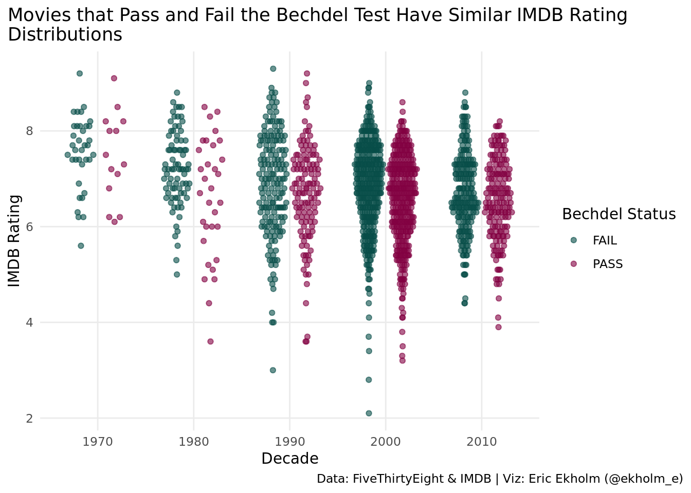
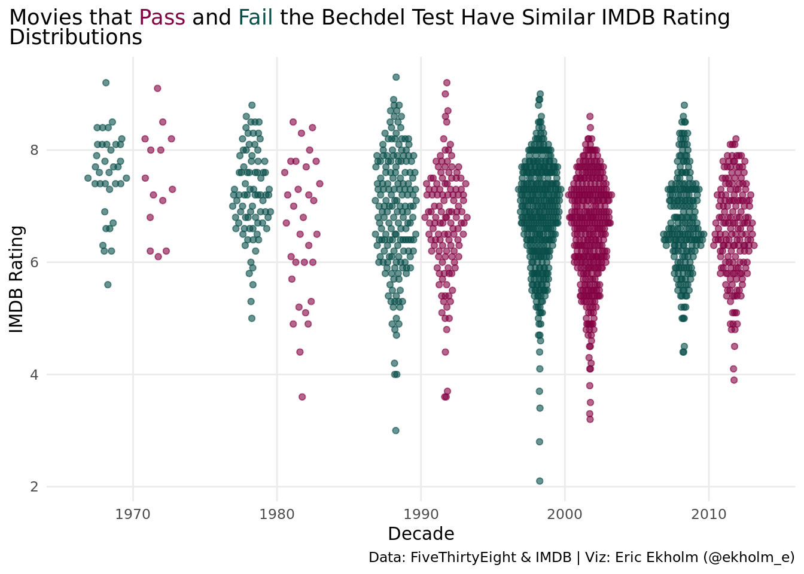
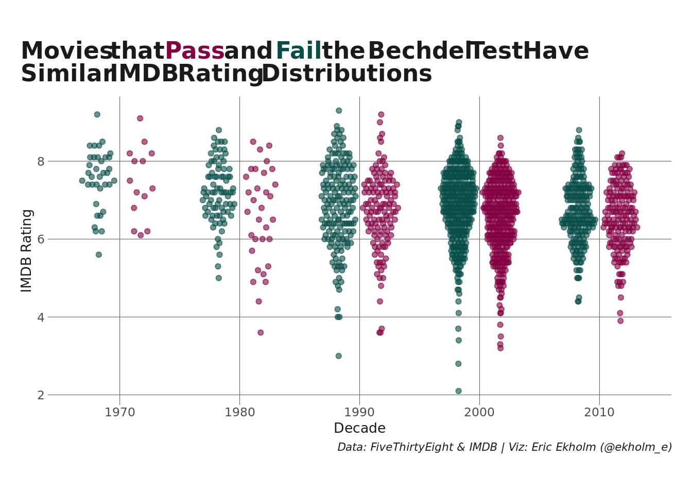

#load packages
library(tidyverse)
library(ggtext)
library(eemisc)
library(harrypotter)
library(ggbeeswarm)
#read in data
movies <- readr::read_csv('https://raw.githubusercontent.com/rfordatascience/tidytuesday/master/data/2021/2021-03-09/movies.csv')
#return decade a movie is released in
movies <- movies %>%
mutate(decade = year - (year %% 10))
#getting the hex codes I want to use -- not strictly necessary to store these; I could just look them up
luna <- hp(n = 2, option = "LunaLovegood")When I was working on my submission for #TidyTuesday Week 11, 2021 (Bechdel Test), it hit me that I wanted to write a blog post showcasing a small but impactful trick I’ve learned from #TidyTuesday for improving my plots – using text color to replace a plot legend.
Here’s my Bechdel Test #TidyTuesday plot as an example:

You’ll notice that, instead of having a legend off to the right or the bottom or wherever it is you typically place your legends, I’ve changed the font color of the words “Pass” and “Fail” in the title to contain this same information. We can do this using Claus Wilke’s invaluable {ggtext} package, which provides improved rendering for ggplot2.
Let’s walk through how (and when) to do this, then!
Disclaimer: I’m not a data viz expert, and there are tons of people who create visualizations for #TidyTuesday that regularly blow anything I make out of the water (see CedScherer or geokaramanis, for example). That said, what I want to walk through here is a useful, easy-to-implement trick that I use for a lot of plots I make for my job and doesn’t require you to be a ggplot wizard.
Setup
First, let’s load the packages we’ll need. I’m going to load:
{tidyverse}, for{ggplot2}and other data wrangling tools;{ggtext}, for text rendering, and especially theelement_markdown()function;{harrypotter}, for the colors I’m going to use.
I’m also going to use {ggbeeswarm} to make a beeswarm plot, but if the plot you’re interested in making isn’t a beeswarm plot, then obviously you don’t need this. And, finally, I’ll use my personal miscellaneous package, {eemisc} in the very final example, since it has some custom ggplot theming in it that I like better than theme_minimal(), which I’ll use in the previous examples.
In this setup step, I’m also going to read in the Bechdel Test data from the #TidyTuesday Github repo and do some very light data processing to return the decade each movie was released in (rather than the year).
Create the Initial Plot
Now we’re ready to make a plot. First, I’ll make a “typical” plot – one with a legend describing the values that each color represents. I’ll make a beeswarm plot (similar to a violin plot, but with individual points rather than a density curve) using geom_quasirandom() to examine the IMDB rating distributions for movies that pass and fail the Bechdel test, by decade.
p_legend <- movies %>%
ggplot(aes(x = as_factor(decade), y = imdb_rating, color = binary, group = as_factor(binary))) +
geom_quasirandom(dodge.width = .7, width = .15, alpha = .6) +
scale_color_hp_d(option = "LunaLovegood", name = "Bechdel Status") +
theme_minimal() +
labs(
y = "IMDB Rating",
x = "Decade",
title = "Movies that Pass and Fail the Bechdel Test Have Similar IMDB Rating\nDistributions",
caption = "Data: FiveThirtyEight & IMDB | Viz: Eric Ekholm (@ekholm_e)"
) +
theme(
panel.grid.minor = element_blank(),
plot.title.position = "plot",
plot.caption.position = "plot"
)
p_legend
So, this isn’t a bad plot. It’s easy to read and the takeaway is fairly obvious. There are several tweaks we could make to improve it, though, and the one that stands out to me is to do something about the legend. It’s eating up a lot of space on the right-hand side of the graph to present a relatively small amount of information (albeit important information).
One approach might be to put the legend at the bottom of the plot. It will take up less space this way (and give the plot more space to expand horizontally), but it will still take up some space, and there’s another alternative…
Create a Legend-less Plot
A better approach would be to use {ggtext} to color the text of the words “Pass” and “Fail” in the title to correspond to the colors of the points in the plot. I prefer this approach for a few reasons:
- People’s eyes will be drawn to the title anyway, so it makes reading the plot more efficient by allowing the title to pull double duty;
- It frees up horizontal (or vertical) space in the plot itself, and;
- As sort of an added bonus, it makes you think a little more carefully about your plot title.
Fortunately, {ggtext} lets us change the color text and labels in ggplots via the element_markdown() function, which we can use within the ggplot theme(). We can just pass some HTML directly into the title (or axis, or caption, or w/e) text and it will render appropriately.
More specifically, we can put whichever word(s) we want to change in the title within a <span> tag and then specify the style we want to apply within the tag. We then tell theme() that the plot title should be considered markdown rather than text (by setting plot.title = element_markdown()), like so:
p_color <- movies %>%
ggplot(aes(x = as_factor(decade), y = imdb_rating, color = binary, group = as_factor(binary))) +
geom_quasirandom(dodge.width = .7, width = .15, alpha = .6) +
scale_color_hp_d(option = "LunaLovegood", name = "Bechdel Status") +
theme_minimal() +
labs(
y = "IMDB Rating",
x = "Decade",
title = "Movies that <span style='color:#830042'>Pass</span> and
<span style='color:#084d49'>Fail</span> the Bechdel Test Have Similar IMDB Rating<br>Distributions",
caption = "Data: FiveThirtyEight & IMDB | Viz: Eric Ekholm (@ekholm_e)"
) +
theme(
panel.grid.minor = element_blank(),
plot.title = element_markdown(), #telling ggplot to interpret the title as markdown
legend.position = "none", #remove the legend
plot.title.position = "plot",
plot.caption.position = "plot"
)
p_color
This plot contains the same information, but the actual plot itself has a lot more breathing room now that we’ve gotten rid of the legend. It also requires our eyes to move to fewer places since the title carries now carries the information that was in the legend.
Again, it’s the styling specified in the <span> tag within the title text (above) coupled with setting plot.title = element_markdown() within the theme() that allows this. You could also specify other styling (bold, italics, sizes, etc) as necessary, but I won’t focus on that here.
Some Caveats
Although I think this is a great trick to improve a lot of different plots, it’s not something I use for everything, and there are definitely cases where it’s not appropriate. Most notably, I wouldn’t use this approach if I had more than 3 or 4 groups/classes represented by colors. This isn’t necessarily a hard and fast rule, but I’ve found that if I have a lot of classes, I have a hard time writing a sensible title that incorporates the name of each class (so that I can color-code the text). If you end up making a list and coloring the text of that list, you might as well just use a legend. I’m also not sure I’d use this approach if I had two colors that were fairly similar. It’s easier to distinguish colors that are adjacent to one another, and so if your words containing color aren’t adjacent in your title, it might be hard to tell them apart if they’re similar colors.
Some Extra Styling
Like I mentioned at the outset, I have a custom ggplot theme in my personal R package ({eemisc}) that tweaks the above plot in a few ways to make it look nicer (in my opinion). Additionally, it assumes titles and subtitles are element_markdown() already, so it saves that line of code. Using my theme, we can revise the previous plot to the following:
p_final <- movies %>%
ggplot(aes(x = as_factor(decade), y = imdb_rating, color = binary, group = as_factor(binary))) +
geom_quasirandom(dodge.width = .7, width = .15, alpha = .6) +
scale_color_hp_d(option = "LunaLovegood") +
labs(
y = "IMDB Rating",
x = "Decade",
title = "Movies that <span style='color:#830042'>Pass</span> and
<span style='color:#084d49'>Fail</span> the Bechdel Test Have<br>Similar IMDB Rating Distributions",
caption = "Data: FiveThirtyEight & IMDB | Viz: Eric Ekholm (@ekholm_e)"
) +
theme_ee(size = 10) +
theme(
legend.position = "none",
panel.grid.minor = element_blank()
)
p_final
Hope this is helpful, and happy plotting, all!
Reuse
Citation
BibTeX citation:
@online{ekholm2021,
author = {Eric Ekholm},
title = {Improving Ggplots with {Text} {Color}},
date = {2021-03-24},
url = {https://www.ericekholm.com/posts/improving-ggplots-with-text-color},
langid = {en}
}
For attribution, please cite this work as:
Eric Ekholm. 2021. “Improving Ggplots with Text Color.”
March 24, 2021. https://www.ericekholm.com/posts/improving-ggplots-with-text-color.